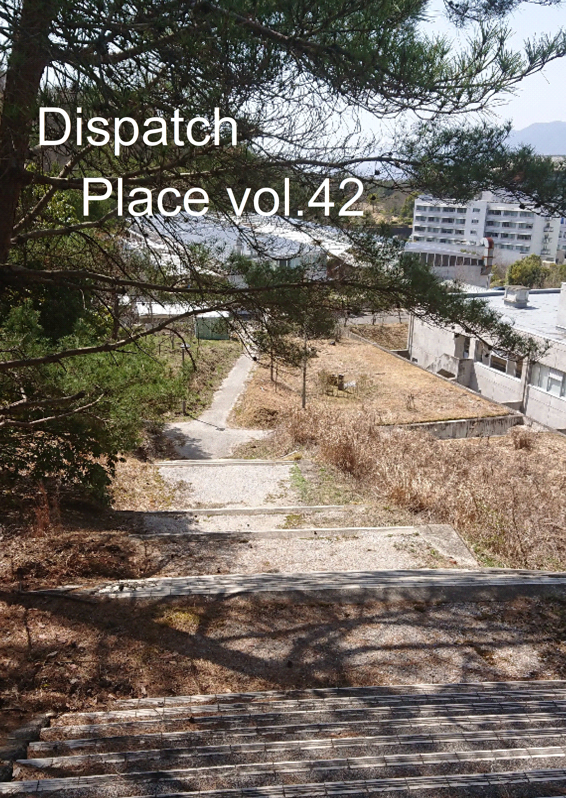
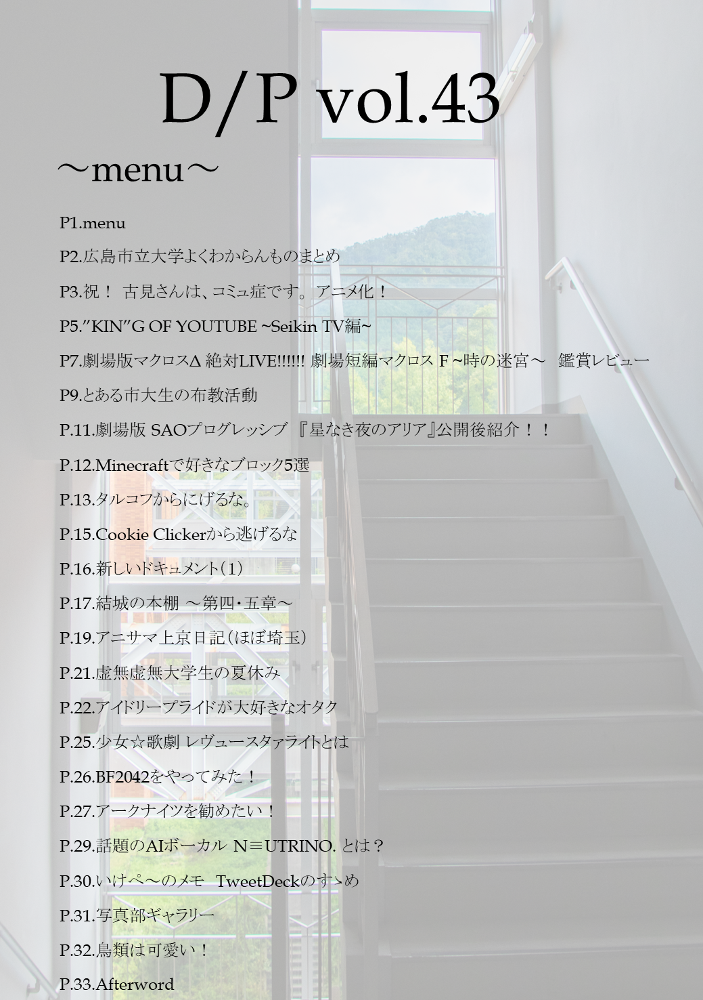

Twitter:
Twitter: 主な活動
部誌「Dispatch Place」の発行
定期的に、マスコミ研究会のメンバーによる記事を収録した「Dispatch Place」を頒布しています。
 最新
バックナンバー
- Dispatch Place vol.44 (2022年4月18日 発行)
- Dispatch Place vol.43 (2021年10月31日 発行)
- Dispatch Place vol.42 (2021年4月2日 発行)
- Dispatch Place vol.41 (2020年11月1日 発行)
- Dispatch Place vol.40 (2020年4月2日 発行)
クラブ・サークル説明会 運営
新入生が、大学のクラブ・サークルを知る機会となる「クラブ・サークル 説明会」の運営を例年担当しています。
2021年度の様子: 2021年度 クラブ・サークル紹介が開催されました。｜キャンパスライフ｜広島市立大学